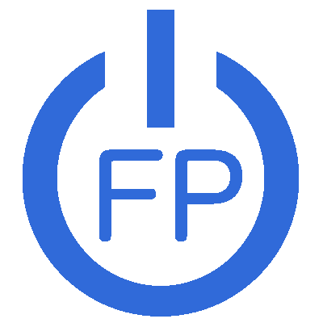

<nav class="navbar navbar-expand-lg navbar-light bg-light navbar-trans sticky-top">
    <a class="navbar-brand" routerLink="home" routerLinkActive="active">
      
      <span id="brand">florentpia.net</span></a>
    <button class="navbar-toggler hidden-sm-up" type="button" (click)="isNavbarCollapsed = !isNavbarCollapsed"  data-target="#myNavbarNav" aria-controls="myNavbarNav" aria-expanded="false" aria-label="Toggle navigation">
      <span class="navbar-toggler-icon"></span>
    </button>
    <div [ngbCollapse]="isNavbarCollapsed" class="collapse navbar-collapse" id="myNavbarNav">
    <ul class="navbar-nav mr-auto">
      <li class="nav-item" routerLinkActive="active">
        <a i18n="@@header_realisations" class="nav-link" routerLink="works/works-list">Réalisations</a>
      </li>
      <li class="nav-item" routerLinkActive="active">
        <a class="nav-link" routerLink="contact">Contact</a>
      </li>
    </ul>
    <ul class="navbar-nav ml-auto">
        <div class="social-logos ml-auto navbar-text" style="font-size:1.5em;">
          <a style="color:grey;margin-right: 15px;" href="https://twitter.com/florentpia" target="blank">
            <i class="fab fa-twitter"></i>
          </a>
            <a style="color:grey;margin-right: 15px;" href="https://www.linkedin.com/in/florent-pianet/" target="blank">
              <i class="fab fa-linkedin-in"></i>
            </a>
          <a style="color:grey;margin-right: 15px;" href="https://github.com/Vaniom" target="blank">
            <i class="fab fa-github"></i>
          </a>
          <span class="language-container">
              <ng-container *ngFor="let language of languageList">
                <a href="/{{language.code}}/" class="language">{{ language.code }}</a>
              </ng-container>
            </span>
        </div>
        
    </ul>
  </div>
</nav>
